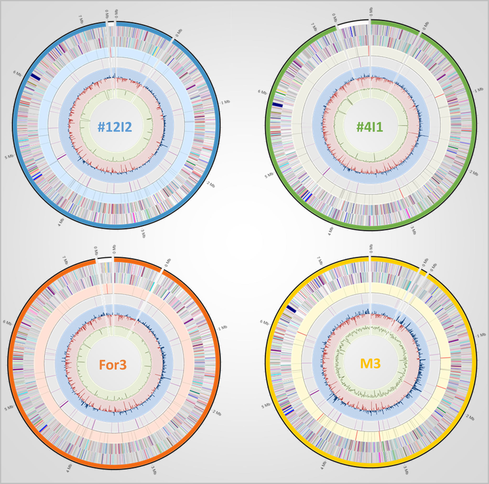

This page presents circular genome maps of four strains within the Streptomyces silvae clade. The figure summarizes genome architecture, contig organization, distribution of coding sequences, non-coding RNA genes, antibiotic resistance determinants, GC skew, and GC content.
Together, these maps provide a genome-wide visual comparison of structural organization and annotated functional features across the analyzed strains.

The maps allow comparison of contig structure, genome size distribution, and chromosome-wide organization across the four analyzed strains.
Protein-coding genes, RNA features, resistance determinants, GC skew, and GC content can be compared directly across genomes.
Protein-coding genes were functionally annotated using the RAST annotation pipeline. Functional categories correspond to the SEED subsystem classification and are represented by specific colours in the genome maps.
| Color | Functional category |
|---|---|
| Nucleosides and nucleotides | |
| Amino acids and derivatives | |
| Protein metabolism | |
| Sulfur metabolism | |
| Cell division and cell cycle | |
| Phosphorus metabolism | |
| Motility and chemotaxis | |
| Carbohydrate metabolism | |
| Regulation and cell signaling | |
| Cofactors, vitamins, prosthetic groups and pigments | |
| Secondary metabolism | |
| Cell wall and capsule | |
| DNA metabolism | |
| Virulence, disease and defense | |
| Fatty acids, lipids and isoprenoids | |
| Potassium metabolism | |
| Nitrogen metabolism | |
| Miscellaneous | |
| Dormancy and sporulation | |
| Phages, prophages, transposable elements and plasmids | |
| Respiration | |
| Membrane transport | |
| Stress response | |
| Iron acquisition and metabolism | |
| Metabolism of aromatic compounds | |
| RNA metabolism |
Krzywinski M. et al. 2009. Circos: an information aesthetic for comparative genomics. Genome Research.